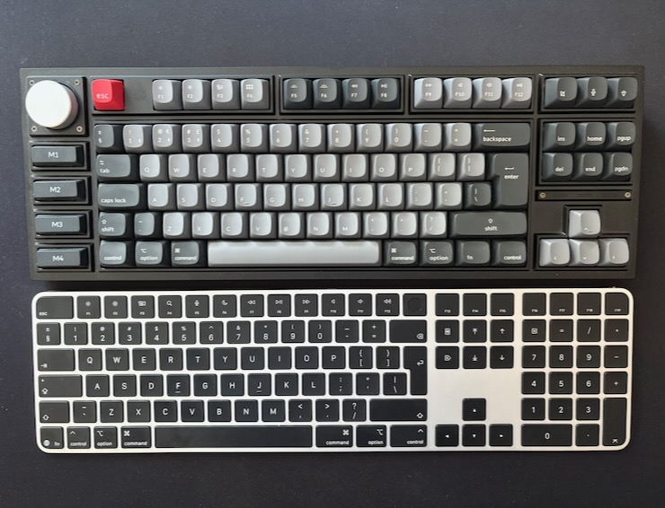

Quest for a perfect keyboard
I like keyboards.
For most people keyboards are merely input devices, not worth second thought. And they are right. In most cases people do not need to worry too much about a keyboard. Keyboards are ubiquitous, standardised, straightforward to use. They are provided in every workspace and even the simplest, cheapest one gets the job done. Why one would try to improve something that is good enough?
Well, sometimes good enough is not good enough for every task, and some people could benefit from upgrading certain pieces of hardware they use on a daily basis. It is hardly needed to upgrade a keyboard for a person who uses their desk only occasionally, maybe writing a few emails. But if your job requires long hours of staring at computer screen and writing significant amount of text, a generic keyboard might not be the most optimal solution in terms of both ergonomics and productivity.
Choosing a keyboard is a matter of personal preference. As far as I have observed, there are two camps: people who do not care about the keyboard they use and people who obsess about every detail of their keyboard, trying to find the perfect tool for their use case, the holy grail of input devices. I do not think I need to tell you which camp I belong to.
The beginnings
In early 2010s, when I was still a Windows user, I was using a cheap wireless keyboard with a backlight. I needed the backlight, so I prioritised that over other specs, and bought one of the cheapest keyboards that still offered a backlight. It turned out to be a mistake. The rubber membrane in that keyboard was terrible. It gave a spongy, inconsistent feedback and physically hurt my fingers after a prolonged typing session. After only a couple of months (which, from time perspective, was already too long) I bought a wired, backlight keyboard, which was a bit pricier. The new keyboard also had membrane keys, but offered significantly improved typing experience. I had been using that keyboard with my PC for several years. It was my main input device until January 2015, when I bought my first Macintosh computers: a Mac Mini and MacBook Air.
Switching to Apple ecosystem was a big deal, in a positive way. I finally saw that some things can be done differently, easier and more convenient for the user. A good example is the location of ⌘ key, which is closer to the space bar and allows for more streamlined use of some keyboard shortcuts. The quality of keyboards was also better, both the built-in one in MacBook Air and Apple Magic Keyboard for Mac Mini. I liked them a lot, they were yet another step up from the wired membrane keyboard I had been using with my PC for some time. Now, that Mac computers became my main work machines, the PC had been delegated solely to gaming (I used Parallels Desktop on MacBook Air when I had to open some Windows-specific programme). The membrane PC keyboard was used only when exploring the Wastleland in Fallout 4 or fighting dragons in Skyrim, etc.
I was a happy user of stock Apple keyboards for four years, when I finally decided to buy my first mechanical keyboard. I had been aware of their existence for quite some time. I studied differences between colours of the switches and even before I had a chance to try out a mechanical keyboard, I had already known my switch preferences1. My first mechanical keyboard was Das Keyboard Model S Professional for Mac.
Finding the right mechanical keyboard turned out to be much more difficult than I had anticipated. Two factors were severely limiting my options. Firstly, I wanted a keyboard with a Mac-specific layout, with keys like ⌘, ⌥, ∧ instead of Win, Ctrl and Alt. That of itself shrank my choices by 2/3 or more. Turns out, there are many producers of mechanical keyboards that focus solely on Windows segment of the market, mostly for gaming or office use. While you have a fairly big choice of switches or sizes of the keyboard, when it comes to Mac-specific layouts, your options are few and far between.
The second factor was that I required a keyboard with the ISO layout (basically, a keyboard where ↩ key is in the shape of an inverted L). ISO is a standard for international keyboards but most of the world had adopted the ANSI layout (where ↩ key is in a shape of horizontal rectangle) as seen in the USA. When buying Das Keyboard, I opted for ANSI version, which was a big compromise because there was no ISO version with Mac-specific keys available. It worked flawlessly and my joy of writing to the clicky melody of blue switches was immense. Yet when I switched from Mac Mini (where I used the mechanical keyboard) to my MacBook Air, the layout was different, so for the first few minutes I kept hitting wrong keys when trying to advance to the next line with Enter. It was not a dealbreaker, but it introduced unwanted friction in my workflow. Additionally, the keyboard lacked backlight and lettering on the keys started to wear down pretty quickly, after only a couple of months, which was a bit disturbing.
After yet another couple of years I came by discussion of mechanical keyboards on the internet and I saw the name “Keychron” for the first time. It was a brand I did not consider when I was buying my first mechanical keyboard. I searched their website and, to my surprise, I found numerous mechanical keyboards available with Mac-specific keys and the ISO layout. And those keyboards had configurable backlight and worked wirelessly! ‘I finally found keyboard heaven’ I told myself. I ordered my new mechanical keyboard in December 2023 and it arrived just in time for Christmas.
The perfect keyboard (?)
For the last three years I have been a proud owner of Keychron Q3 Pro Special Edition. It is a marvellous keyboard in every way. It can pair to up to three devices, so I can use it with a MacBook, Mac Mini and an iPad. It is near perfect. From time perspective, I wish I had opted for another model, with a numeric pad (as a scientist, I find it really useful). On the other hand, the ten-key-less version that I have already weights well over 2 kilograms2.
Another thing that I used to regret is, that the keycaps are made with ABS plastic, which is supposedly less durable (and turns glossy faster under the oils from one’s hands) than a double-cast PBT keycaps found in other models. On the other hand, with double-cast PBT keycaps there would be no shine-through for lettering, which greatly improves readability in the dark or in dim light conditions.
The last remaining thing that still makes me think about an improvement is the type of switches installed in the keyboard. Unfortunately, the model I wanted was not available with the clicky type of switches I enjoyed in Das Keyboard. Instead it uses Keychron Banana switches, which are tactile but not clicky. I got used to them through all those years, but since the keyboard is hot-swappable (which means I can replace switches easily, without any soldering), I am considering replacing them with the second generation of Cherry MX Blue switches. In theory, it would gave me the best of both worlds: the clicky feedback I know from Das Keyboard and the good old ISO layout of Keychron.
The Globe key
Unfortunately, things got even more complicated by the fact that Apple introduced Globe key into their system shortcuts on both macOS and iPadOS. The Globe key is especially heavily used in iPadOS, which makes my workflow inconsistent. On some days I only work with an iPad and on others I use my MacBook. There are certain keyboard shortcuts that are identical, but there is a lot of shortcuts that are iPad-specific, and if I want to be fairly productive with that device, I should try to use them. The issue is, only proprietary Apple keyboards have the Globe key.
There is no easy way of remapping the Globe key to another key with QMK/VIA, so the only remaining option is to remap it using iPad keyboard settings. Alas, Apple limits one’s ability to remap keys, and Globe key can only be alternatively represented by either ⌘, ⌥, ∧ or Caps Lock. Since the first three are essential for other shortcuts on iPadOS, if one wants to use the Globe key, they need to sacrifice their use of Caps Lock. There is a workaround to remap another key to Caps Lock with QMK/VIA (which, on the contrary to remapping the Globe key, can be done) but then things start to get out of hand…
Apple Magic Keyboard
Recently, I bought a new model of Apple Magic Keyboard with Touch ID and Numeric Keypad. I did it as an experiment of sorts, to see if switching from a mechanical keyboard with great typing experience but no numeric pad, no Touch ID and no Globe key, to a membrane keyboard with numeric pad, Touch ID and a Globe key will actually be a downgrade or upgrade. The results are mixed and inconclusive.
One of the biggest advantages of the Apple Magic Keyboard is the implementation of Touch ID, which works beautifully with my new MacBook Pro. Since my laptop usually resides on an arm mount, it is at the far end of my reach when I need to use its Touch ID button to authenticate myself. Apple Magic Keyboard removes this obstacle, but sadly only for a MacBook. My iPad Pro, although using a newer M5 chip, cannot take advantage of the Touch ID button and still prompts me to use Face ID. I find it cumbersome, as my iPad is on a stand to the right of my screen and laptop arm, and to use Face ID I need to turn my head about 70 degrees to the right. I suppose it is a limitation of iPadOS rather than a hardware issue.
The Globe key also proved to be useful when working on my iPad, allowing me to use the full suite of shortcuts designed for this operating system. I especially use the Globe key + ` shortcut to switch active apps in Stage Manager. Additional function keys F13 to F19 are helpful when I need to quickly launch one of predefined programmes or a custom shortcut in the Shortcuts programme. In this category Apple Magic Keyboard is a clear winner.
Regarding the downsides, the typing experience comes to mind. Apple Magic Keyboard has much smaller key travel than a mechanical keyboard, additionally the keycaps are completely flat, which is not the optimal solution in terms of ergonomics. However, I have noticed that I can actually type a bit faster on this subjectively worse keyboard, due to its low profile and fairy big, evenly-spaced keys. It does not mean that I prefer this keyboard, but it does mean that I am marginally quicker with it. In terms of error rate, I guess it is similar on both keyboards. I have never been a touch-typist, nor did I pay particular attention to words per minute or other metrics. My output is nearly always limited by the speed at which I compose my thoughts anyway. It is hard to imagine a scenario in which I would need the extra speed, and I do not think that my productivity gain with Apple Magic Keyboard is bigger than maybe a minute or two per day. Still, it is a food for thoughts.
Some people would also notice that Apple Magic Keyboard has no backlight. For me personally, it is not a factor anymore. I use my keyboard at work, where I have a big window and very good lighting, so there is no need for me to use keyboard internal LEDs at all. I have even turned off the built-in light in my Keychron keyboard to conserve the battery and because in a well-lit room it was not nearly as impressive as it would be in a dark gaming den (speaking of gaming, I eventually replaced the membrane keyboard at my PC with a mechanical Razer Huntsman Elite which has linear, yellow switches).
 My two contestants in the quest for a perfect keyboard: Keychron Q3 Pro Special Edition (top) and Apple Magic Keyboard with Touch ID and USB-C connection (bottom). Both work awesomely and offer great yet distinctive typing feedback.
The final showdown
To further aid my decision regarding the keyboard, I ordered the second generation of Cherry MX Blue switches and I have replaced them in Keychron Q3 Pro keyboard, to see how using my preferred switches would improve the typing experience. Although the whole operation took about an hour (it was the first time I was swapping switches on a mechanical keyboard), after a short while I can say that it was totally worth it.
The clicky feedback helps with discerning any accidental double-tapping and I also like the fact that both the initial depression and the actuation forces for Cherry MX Blue switches are a bit lower than for Keychron Banana. With Banana switches I had to press a key harder due to the fact that the tactile bump was at the very beginning of key travel. With Cherry MX Blue switches the tactile click is more or less mid-way, so the initial resistance when pressing a key is lower.
Keychron keyboard with Cherry MX Blue switches is definitely an improvement. However, I cannot overlook the fact that Apple Magic Keyboard has yet another ace in its metaphorical sleeve: tight integration with macOS and iPadOS, especially in terms of Apple-specific function keys. The new Globe key is one example, but first-party keyboards also allow for easy use of the Spotlight search and active windows view while pressing F4 or F3, respectively. While it is easy to configure those keys on Keychron to work in the same way on macOS, it appears that this is not the case for iPadOS. I cannot seem to be able to invoke active windows view by pressing F3 on Keychron keyboard while it is connected to iPad. Both Apple Magic Keyboard with Touch ID and the Magic Keyboard for iPad have a functional Spotlight and active windows view under F4 and F3 keys on iPadOS. It is not a deal-breaker, but yet another small annoyance that adds to friction while using a Keychron keyboard.
Since both Apple Magic Keyboard and Keychron Q3 Pro are very good keyboards, and each of them stands out in its own right, I decided to keep them both, with a slight preference towards Apple Magic Keyboard. I am using Apple Magic Keyboard with Touch ID for the time being, although I cannot promise that I will not return to Keychron one day. At this moment, Apple’s Magic Keyboard first-party functionality is more important for my overall productivity and frictionless workflow than Keychron’s better typing feedback.
It is a surprising conclusion for me. I had originally expected that the perfect typing experience of Keychron with Cherry MX Blue switches would be the deciding factor but reality proved otherwise. Those two weeks were by far the most exhaustive testing of keyboards I have ever performed. If, even after two weeks, I cannot name a clear winner, it means that both keyboards are equally well-suited for the task.
This is article no. 18 from the 100 Days to Offload series.